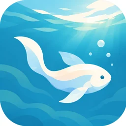
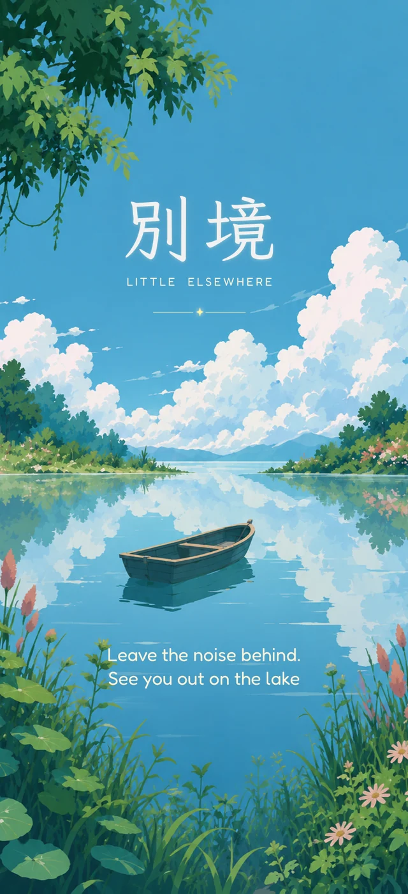
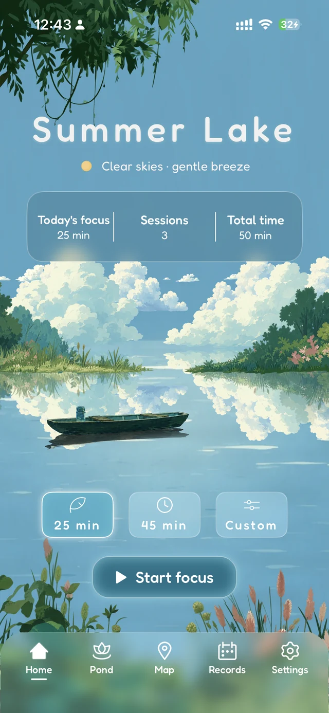
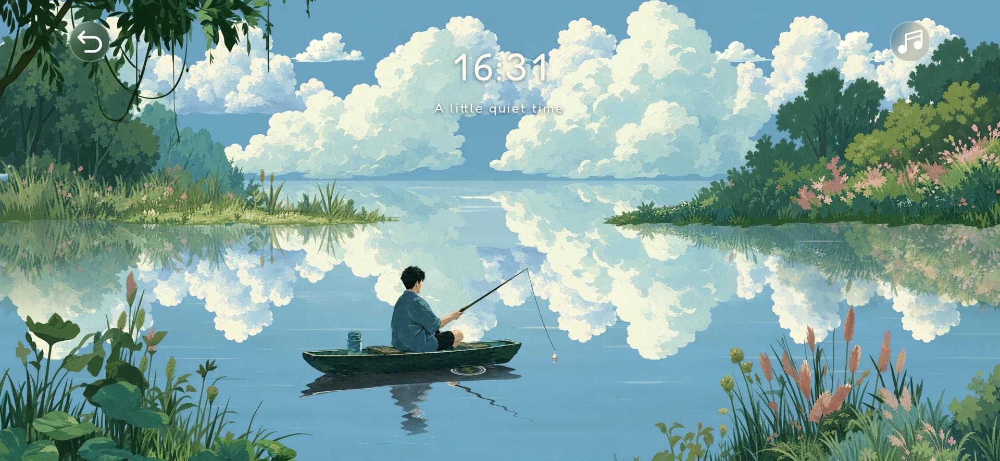
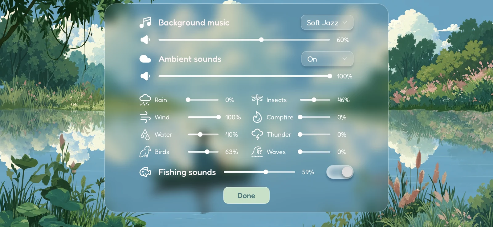
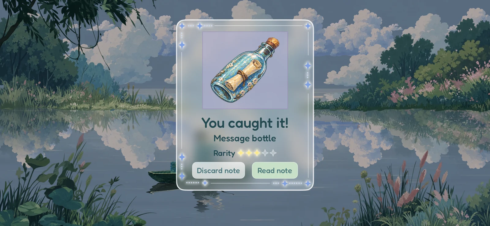
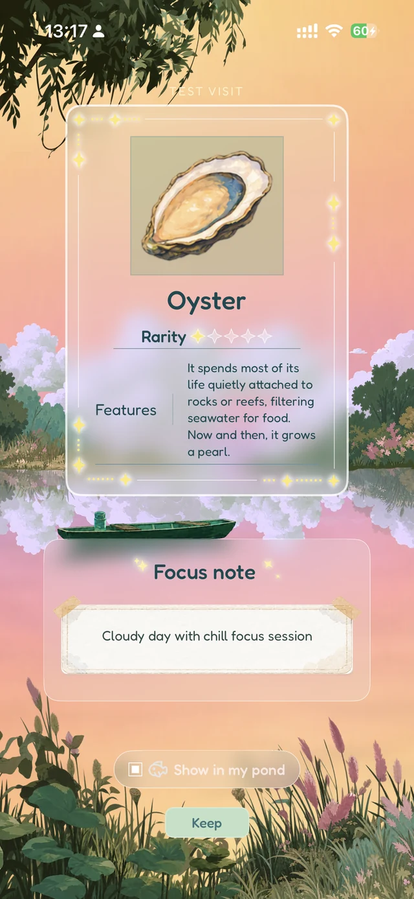

A QUIET FOCUS COMPANION
Little
Elsewhere别境
给专注一片风景，
给日常一点别处。
A little focus. A little fishing.
A little elsewhere.
内测已开放 · 仅限 iOS Beta open · iOS only · TestFlight




MAKE A LITTLE ROOM
留一段时间，给眼前的事。
Set a timer. Let the lake keep you company.

FIND YOUR SOUND
雨声，鸟鸣，
或只是风。
让自然声音陪你安静下来。1.0 Free 声景随天气变化；Plus 方案提供完整环境音与自由混音。
Let nature keep you company.
The 1.0 plan offers weather-based ambience in Free and full sound mixing in Plus.

FOCUS. FISH. FIND.
专注之后，
钓起一点小惊喜。
一条鱼，一只贝壳，一点小小的惊喜。
为这段时光留下一点发现。
A fish, a shell, a little surprise.
A small discovery to remember your time by.



AN INVITATION TO SLOW DOWN
来别境，坐一会儿。
Your little elsewhere is ready for a visit.
iOS 内测已开放iOS beta · via TestFlight
安装 TestFlightGet TestFlight
在 iPhone 上，从 App Store 安装 Apple 的 TestFlight。
Install Apple’s TestFlight from the App Store on your iPhone.
获取 TestFlight Get TestFlight ↗打开内测邀请Open the invitation
用同一台 iPhone 打开别境邀请链接，按提示接受邀请。
Open our invitation on the same iPhone and follow the prompts to accept.
打开邀请 Open invitation ↗安装，开始旅途Install & settle in
在 TestFlight 中点击「安装」，打开别境，开始第一段专注。
Tap Install in TestFlight, open Little Elsewhere, and start your first focus session.
正在电脑上浏览？请用 iPhone 打开本页。On a computer? Open this page on your iPhone.
如何反馈？ How can I share feedback?
打开 TestFlight → Little Elsewhere →「发送 Beta 版反馈」。欢迎附上截图，告诉我们你的发现。
In TestFlight, select Little Elsewhere, then Send Beta Feedback. Screenshots and a few words about your experience are always welcome.
无法加入内测？ Can’t join the beta?
请用 iPhone 打开邀请，并检查 TestFlight 中显示的设备与系统要求。如果提示名额已满或暂不接受新测试员，请稍后再试。如需帮助，请联系 hello@jevaiworks.com。
Open the invitation on your iPhone and check the device and system requirements shown in TestFlight. If the beta is full or isn’t accepting testers, try again later. Need a hand? Email hello@jevaiworks.com.
目前仅限 iOS，Android 暂未开放。内测版本仍在完善，功能与画面可能调整。Currently iOS only; Android testing is not available. This is a beta, and features and visuals may change.
Apple TestFlight 使用说明 TestFlight help ↗1.0 的 Free 与 Plus 功能方案及购买帮助，请查看帮助与支持。实际可用内容以发布版本为准。See Help & Support for the 1.0 Free/Plus plan and purchase help. Availability is subject to the release version.